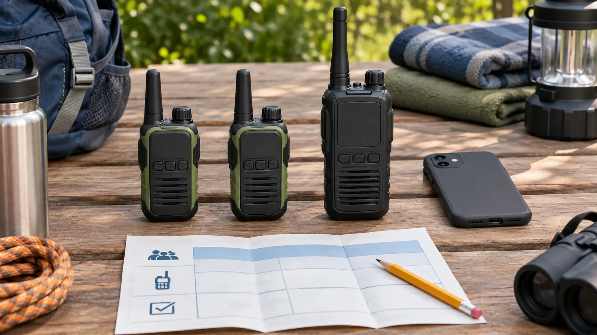

FRS handhelds
Fits: simple short-distance family coordination without an individual license. Tradeoff: shared channels, low power, fixed antenna and terrain-sensitive range.
FAMILY COMMUNICATION · COMMERCIAL · AUTHORITY-EXPANSION
The mileage number on the box is not your trail, stadium or neighborhood. Start with license-free FRS, test the exact route, teach one call script, and keep the phone and adult supervision plan.

Commercial disclosure: this guide includes three Amazon Associate category links added by Mr Adventure Dad’s approved affiliate system. The site may earn from qualifying purchases at no added cost to you. No radio was hands-on tested; links do not prove certification, legal service, range, waterproofing, battery life, privacy, price, availability, rating or warranty.
For most families who want short-distance communication at a campground, park, museum campus or neighborhood event, FRS is the honest starting point. The FCC created Family Radio Service for short-distance, low-power handheld communication. It operates under authorization by rule rather than an individual license. GMRS can add capabilities, but the operator needs a valid individual FCC license and must understand who is covered. A phone is still better when cellular service works, the adult needs a private detailed message, or emergency calling is the job.
Do not buy on a giant “up to” mileage claim. FEMA’s CERT emergency-communications material says radio performance depends on terrain and atmospheric conditions and that box claims are advertising, not a guarantee of regular performance. Buildings, hills, trees, crowds, body position, batteries and radio placement all matter.
The FCC’s Part 95 rules define FRS and GMRS as separate services. The FCC’s reform order states that FRS does not require an individual license while GMRS does. Current GMRS rule 95.1705 says a valid individual license is required, a new license applicant must be at least 18, and the licensee may allow listed immediate family members to operate covered stations. The licensee remains responsible for proper operation. Fees, filing steps and system interfaces can change, so use the FCC’s current GMRS page rather than a retailer tutorial.
Read the exact device label and manual. A listing that says “walkie-talkie,” “two-way,” “long range” or “FRS/GMRS” is not enough to establish how a current unit is certified or which rules apply. Do not modify antennas, power or programming. Ask the manufacturer or FCC when the service identity is unclear.
FRS and GMRS channels are shared. A “privacy code,” “quiet code,” CTCSS or DCS setting can reduce which transmissions open your speaker; it does not encrypt the conversation or reserve the channel. Other compatible users may hear the transmission, and a family may miss someone using the same channel without the matching code. Never transmit a child’s full name, home address, hotel room, medical detail, payment information or exact empty-house schedule.
Use short operational language: “Blue team to base.” “At the bench.” “Need adult now.” For sensitive information, move together to an adult or use an appropriate private method.
Start with a pair of certified FRS radios when the job is simple, short-distance family coordination. Compare control lock, actual hand size, clear display, charging or cell plan, belt clip, manual, warranty and clean return terms. Weather resistance matters only when documented. A third radio is useful only when a third responsible role exists.
Consider GMRS only when an adult intentionally wants that service, will obtain and maintain the required license, understands identification and operating rules, and has a concrete need that the FRS test did not solve. Do not buy GMRS as a speculative “more miles” upgrade. The links below are category searches, not rankings; verify every exact FCC label and manual.
Cold can reduce useful battery performance; water can exceed a product’s claim; and a glove can defeat small controls. Follow the exact maker’s limits and keep the phone protected and charged. Do not charge wet, damaged or swollen batteries. Adults handle loose cells and inspect compartments.
Low energy: test two FRS units across the home and stop. Bad weather: do not walk outside just to prove range. One unit fails: stay together. No purchase: use the emergency contact-card drill and a physical meeting point.
Skip the purchase when phones already solve the job, the family expects private conversation, the child cannot keep the device on the agreed settings, the activity prohibits radios, loose batteries or cords create risk, or the plan depends on advertised range. Skip GMRS when no adult wants the licensing and operating responsibility. A whistle is not a substitute either; match communication tools to the venue and emergency plan.
Reviewed November 7, 2026 using the FCC’s Personal Radio Services reform order and codified rule text, the current GMRS service page, and FEMA CERT’s Emergency Communications participant manual. The service matrix, 20-minute test and family script are independent editorial tools. They do not certify a device or interpret a specific license.
MAKE THE WEEK COUNT
Build the plan your family can finish well, then leave enough energy for the next part of the day.
More family plansTHE USEFUL STUFF
These are practical categories to compare—not a reason to overpack. Check fit, specifications and current reviews before buying.
Paid links: As an Amazon Associate I earn from qualifying purchases. You pay no additional cost.
Compare control lock, charging method, certified radio service and a size children can actually manage.
See current options → COMPARE ON AMAZONVerify the exact ingress rating and charging-cover design instead of trusting the word outdoor.
See current options → COMPARE ON AMAZONUseful when a long weekend needs a spare-cell fallback instead of another proprietary charging cradle.
See current options →